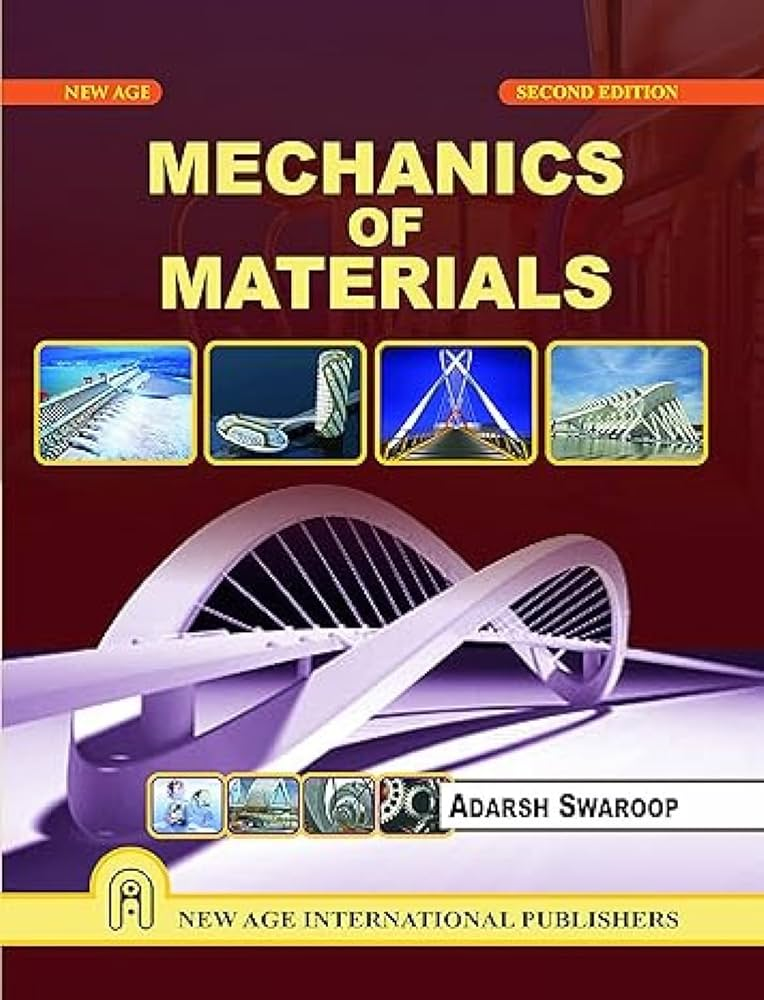

Mechanics of Materials
Adarsh Swaroop (2014 Edition)
Publisher: New Age International Publishers, New Delhi

An Essential Guide for Engineering Students
Mechanics of Materials, also known traditionally as Strength of Materials, is an integral part of the undergraduate curriculum for many engineering disciplines, including:
- Civil Engineering
- Mechanical Engineering
- Aeronautical and Aerospace Engineering
- Naval Architecture
This book has been meticulously crafted to benefit undergraduate students by emphasizing basic concepts, fundamental theories, and real-life applications. It serves as a comprehensive resource for mastering the principles of material mechanics while preparing students for both academic and professional success.
Key Features
- Clear and Concise Theory: Discussions are brief yet thorough, ensuring students grasp the essential concepts with ease.
- Step-by-Step Problem-Solving: Each chapter includes a large number of solved problems, explained clearly at each step, using simple language and free-body diagrams.
- Systematic Approach: Provides a “procedure of analysis” for every major topic, summarizing important concepts and offering a structured method for problem-solving.
- Real-Life Applications: Illustrations and examples from engineering practice demonstrate how theoretical concepts apply to real-world challenges.
- Extensive Problem Sets: Features approximately 1,000 solved problems and additional exercises to enhance understanding.
- Standardized SI Units: Ensures consistency and familiarity for students preparing for competitive and professional examinations.
For Competitive Exams
The book’s content is aligned with the syllabi of various technical universities and professional institutions, making it an invaluable resource for students preparing for:
- IES (Indian Engineering Services)
- UPSC (Union Public Service Commission)
- GATE (Graduate Aptitude Test in Engineering)
- AME (Associate Membership Examination)
Why This Book Stands Out
The comprehensive nature of Mechanics of Materials has made it a bestseller among engineering students. Many who have read it have commended its ability to:
- Simplify complex theories.
- Enhance problem-solving skills through practical examples.
- Prepare them for academic and professional excellence.
“Education is not just about solving equations but understanding the principles behind them.”
— Adarsh Swaroop
Explore and Excel
Whether you’re an undergraduate engineering student or preparing for competitive exams, Mechanics of Materials is your trusted companion on the journey to mastering the subject and advancing your career.
Purchase the Book
To grab your copy of this bestselling guide, visit Amazon India.